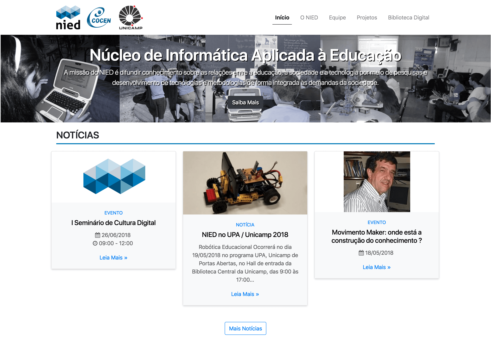
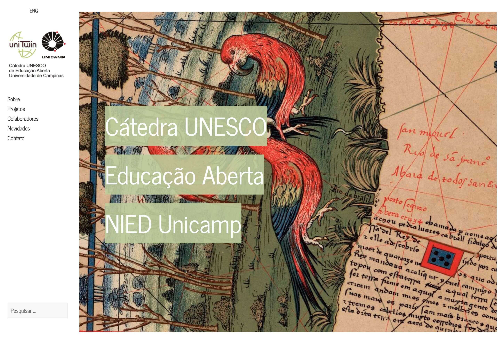
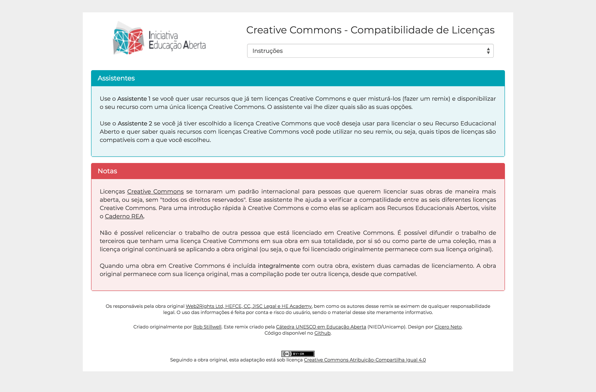
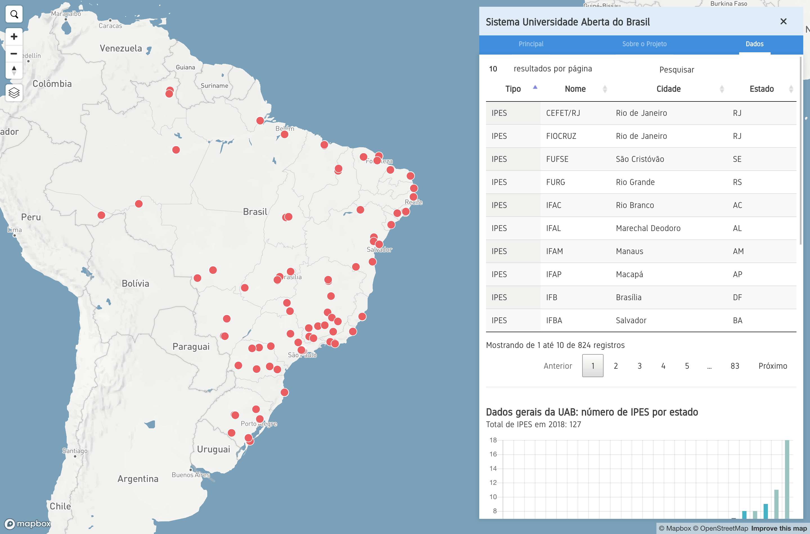
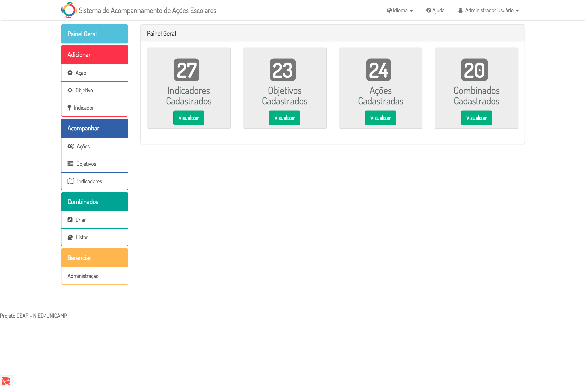

Projetos

Wordpress
Bootstrap 4
Núcleo de Informática Aplicada à Educação
Tema Wordpress criado com Bootstrap 4 para o site do Núcleo de Informática Aplicada à Educação (NIED) da Universidade de Campinas (Unicamp).

Wordpress
Bootstrap 3
Educação Aberta
Tema Wordpress criado com Bootstrap 3 para o site do Cátedra UNESCO em Educação Aberta.

Bootstrap 3
Creative Commons - Compatibilidade de Licenças
Reformulação do site das licenças Creative Commons hospedado dentro do site da Iniciativa Educação Aberta utilizando Bootstrap 3.

Mapbox
Assembly.css
Sistema Universidade Aberta do Brasil
Melhoria do layout do site “Sistema Universidade Aberta do Brasil” utilizando a plataforma Mapbox e o framework Assembly.css.

Vue.js
Bootstrap 3
Laravel
Sistema de Acompanhamento de Ações Escolares
Desenvolvimento do front-end do sistema de gerenciamento de atividades escolares utilizando framework Vue.js/JavaScript e Bootstrap 3. Auxílio no desenvolvimento do back-end da ferramenta utilizando framework Laravel/PHP.
Habilidades
HTML5
CSS3
JavaScript
PHP